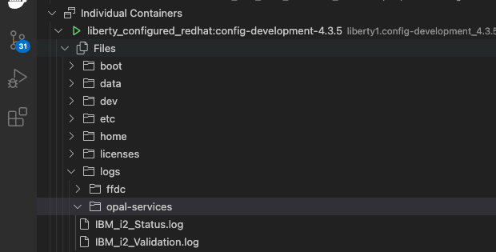
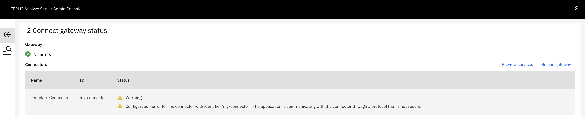

Troubleshooting guide
This topic contains a list of common issues that you may face during the development of your connector, and explains how to solve them. The issues are categorized by the stage of development in which they may arise.
If you come across a problem that is not covered below, please open an issue.
Where to check for errors
Error messages about the i2 Analyze server, your connector configuration, and your data appear in the console when you deploy your i2 Analyze server instance.
In some cases, you might want to view the main server log file for more detail. You can do so within the VSCode Docker extension, by right-clicking on the container and then clicking View Logs or expanding the container view and navigating to Files\logs\opal-services.

Connector configuration errors
Failed to retrieve configuration information for the connector with identifier '<CONNECTOR_ID>' from the URL '<URL>'.
Unexpected response code (404) from the request to URL '<URL>'.
You will see the above messages in the console output when you run ./deploy.sh -c <config_name> -t connectors if i2 Analyze fails to retrieve your connector's configuration from its config endpoint. Check that both the connector ID and the base URL in the message are correct. If they are not correct, update them in the i2 Analyze connector-definition.json file (in the connector-images\<connector-name> directory).
If the URL is correct, then you need to check the implementation of your config endpoint, and that you have assigned to it the correct URL path. The path should be the base URL suffixed with /config.
Some queries are not configured correctly. Contact your system administrator.

You will see the above in the External Searches window if there is a problem with your connector configuration. To understand what went wrong:
Click DETAILS to view more information.
Open a web browser and navigate to
https://i2analyze.eia:9443/opal/admin#/connectors. Under the Status section for your connector, a Warning should be displayed with further information.
Problems might include: "Configuration error for the connector with identifier <CONNECTOR_ID>. The application is communicating with the connector through a protocol that is not secure."
This message appears when i2 Analyze and your connector communicate through HTTP. In a production environment, you should secure this connection by using HTTPS. The procedure is beyond the scope of this guide, but it is covered in the product documentation.
Errors running connector services
Failed to open the selected query. Contact your system administrator

If you see the above error message when you try to run a query from your connector through External Searches in Analyst's Notebook, there are a number of potential causes. To understand what went wrong:
Open a web browser and navigate to
https://i2analyze.eia:9443/opal/admin#/connectorsView the more detailed description of the error in the Status section of your connector.
Some examples (and their solutions) are:
"The condition with identifier <CONDITION_ID> and logical type 'SELECTED_FROM' in the service with identifier <SERVICE_ID> on the connector with identifier <CONNECTOR_ID> specifies a default value that is not valid. <DEFAULT_VALUE> does not match one of the defined possible values."
This message means that you have supplied a default value for a selected-from condition that is not defined as a possible value. Check that the defaultValue is set to a value that is defined in possibleValues.
"The value '<PROPERTY_VALUE>' is not valid for the property type with identifier '<TYPE_ID>'. The value '<PROPERTY_VALUE>' is incompatible with the '<LOGICAL_TYPE>' data type."
This message means that you have supplied a default value for a condition whose logical type is not compatible with the condition's logical type.